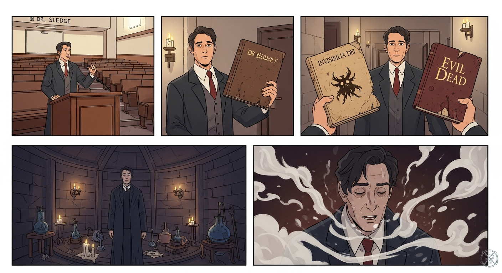
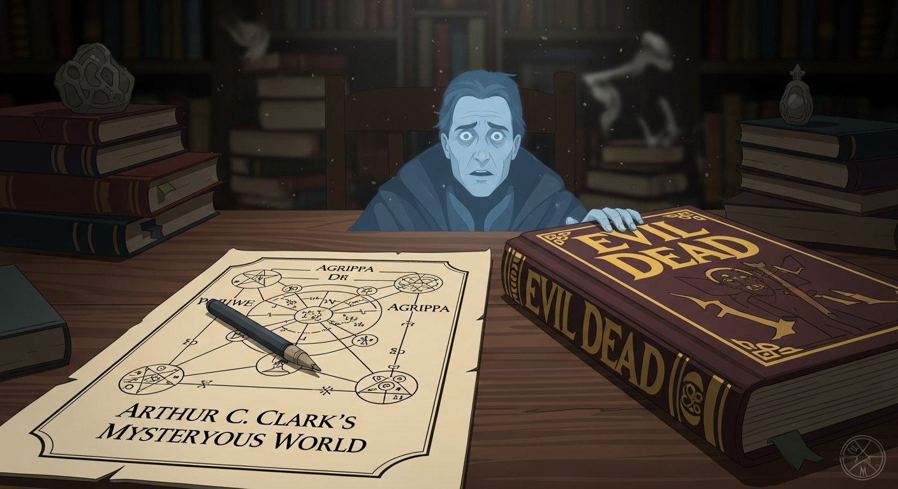
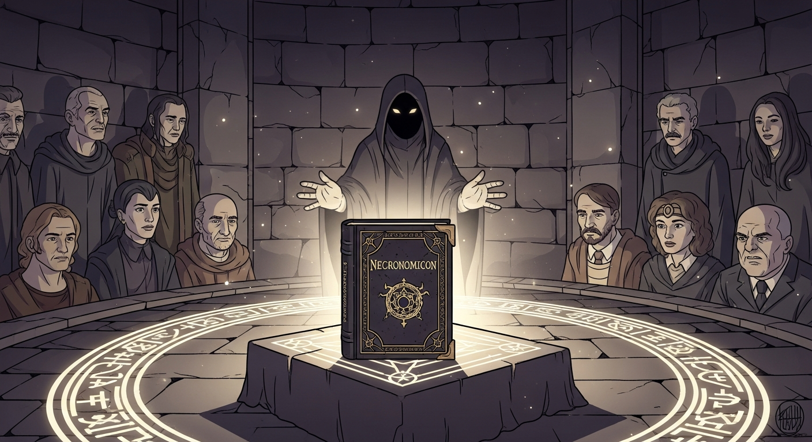
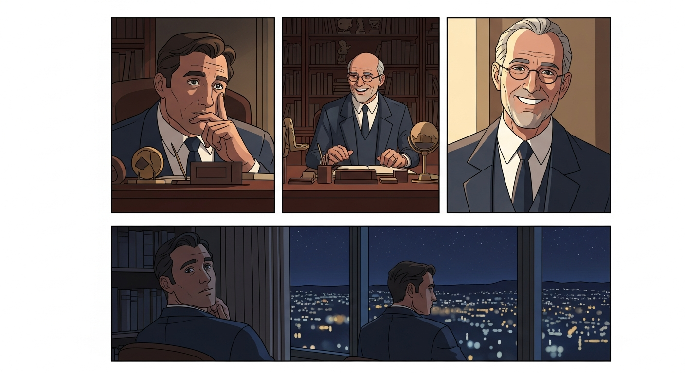

DR. SLEDGE: Agrippa was perpetually frustrated with the 'Ascent of Shades' from Picatrix. A ritual to, shall we say, perceive something *beyond*. (Beat) ALEXANDER F: Dr. Sledge, I have… something. A copy of *Invisibilia Dei*. Agrippa’s notes, perhaps? And… this. An old, damaged *Evil Dead*… AGGRIPA (flashback): Another failure. Nothing but smoke and mirrors. Or, more likely, just smoke.

Within *Mysterious World*, diagrams mirroring Agrippa's notes! Planetary alignments... bizarre. He wasn't just summoning; he was reading the celestial mechanics. *Evil Dead*? A focusing lens. John Dee, through the pages, a spectral warning: This ‘Ascent’ isn’t about command, it’s about understanding the subtle flows. And our *place* within them.

The ritual apexes. No demon appears. Instead… a shift. The *Necronomicon* doesn't pulse with evil, but *energy*. Raw, untamed. Agrippa sought control. His error. The Ascent isn’t about commanding spirits, it's about apprehending the interconnectedness, the currents that bind us.

So, back to the office. The Ascent…it's not about power. Agrippa sought to bind; that was his alchemical error. The grimoires are just accounts of *attempts* to see the unseen. The secret? It's self-knowledge. Perspective. Apprehending the currents, not commanding them. We're all part of the tapestry, Alexander. Always have been.